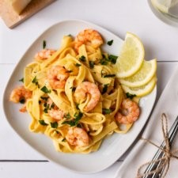

20-Minuten Scampi-Fettucine
Super cremige Scampi Fettuccine, die in 20 Minuten auf dem Tisch steht und richtig lecker schmeckt.
Details
- Verfasser: Susanne
- Zubereitung: 15 minutes
- Kochzeit: 10 minutes
- Gesamtzeit: 20 minutes
- Portionen: 2-3
- Kategorie: Pasta
- Methode: Kochen
- Cuisine: Italienisch
Zutaten
- 400 g Fettuccine von Steinhaus
- 3 EL Olivenöl
- 250 g Scampi
- 1/4 TL Paprika
- eine gute Prise Pfeffer
- 2 EL Butter
- 1 Zwiebel
- 1 Knoblauchzehe
- 250 ml Sahne
- 2 EL frischer Zitronensaft
- 25 g geriebener Parmesan + extra zum Bestreuen
- 3 EL gehackte Petersilie
Zubereitung
- Bringt einen großen Topf voll Wasser zum Kochen. Würzt das Wasser mit Salz. Kocht die Fettuccine für ca. 2 Minuten. Bevor ihr die Fettuccine abgießt, fangt noch 250 ml des Nudelwassers auf.
- Falls ihr gefrostete Scampi benutzt, spült die Scampi mit warmem Wasser ab, bis die Eisschicht gelöst hat, und tupft die Scampi trocken.
- Würzt die Scampi mit 1/4 TL Paprika, 1/4 TL Pfeffer und einer 1/2 TL Salz.
- In einer großen Pfanne erhitzt ihr das Olivenöl. Gebt die Scampi hinein und bratet sie von beiden Seiten für je 2 Minuten an.
- Nehmt die Scampi aus der Pfanne und stellt sie warm.
- Schält die Zwiebel sowie die Knoblauchzehe und hackt beides in kleine Würfel.
- Schmelzt nun in dieser Pfanne die Butter und dünstet die Zwiebeln für 3 Minuten glasig. Gebt nun den Knoblauch hinzu und dünstet ihn für 1 Minute mit an.
- Löscht nun die Zwiebel-Knoblauch-Mischung mit ca. 250 ml des heißen Nudelwassers ab und bringt alles zum Kochen. Wenn das Wasser kocht, gebt die Sahne, den Parmesan sowie den Zitronensaft hinzu. Die Sauce soll jetzt nicht mehr kochen, nur noch ganz leicht köcheln. Schmeckt die Sauce ab und würzt sie mit Salz, Pfeffer und Paprika ab.
- Vermengt die Fettuccine mit der Sauce und rührt die Scampi unter. Bestreut die Scampi-Pasta mit gehackter Petersilie.
Hinweise
Genuss-Tipp: Reibt noch etwas Parmesan über die fertige Scampi-Pasta.

Quelle
Online unter: https://www.meinkleinerfoodblog.de/20-minuten-scampi-fettuccine/